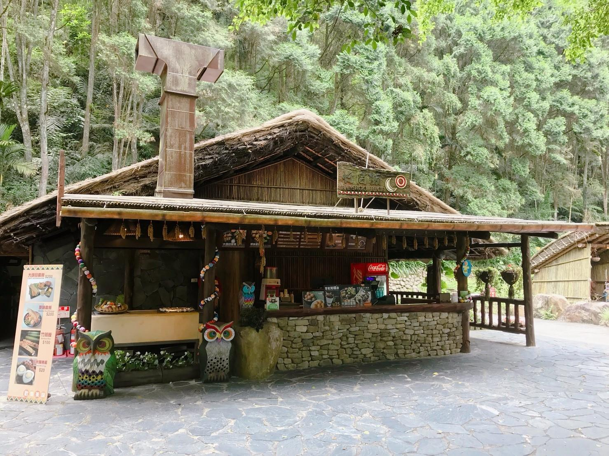
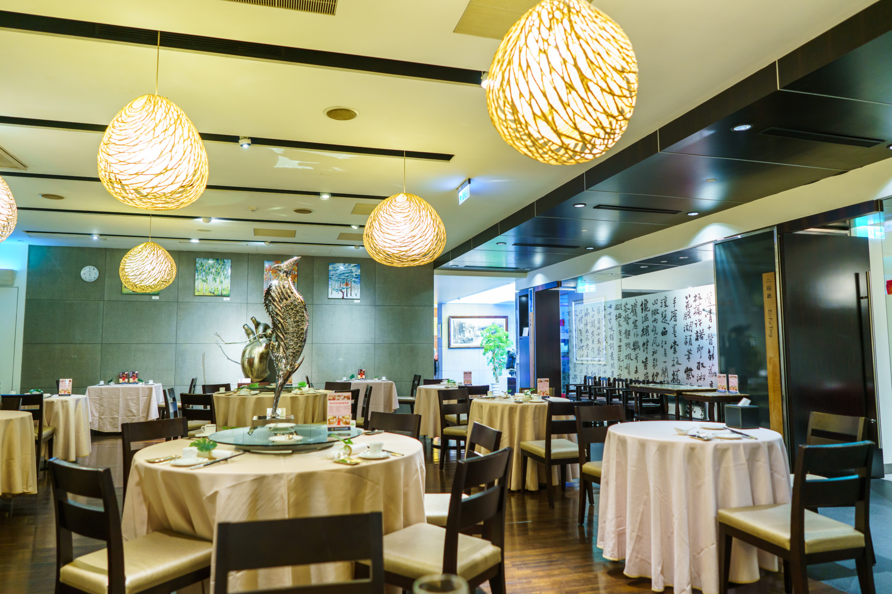

關於我們
最新消息
航海課程
港口服務
船艇租賃
碧藍商城
關於我們
最新消息
航海課程
港口服務
船艇租賃
碧藍商城
港口服務
首頁
＞
港口服務
全部顯示
遊樂設施
美食住宿
攝影景點
購物商城
公共機能
全部清除
▌荷蘭船
乘坐荷蘭船，在劇烈搖擺中體驗北上挑戰西班牙人的刺激與忐忑！
▌大海怪
波里尼西亞同族預言的海怪出現了！牠會是貪婪殖民者的天罰嗎？
▌獨木舟
南島先民的智慧，經得起海浪考驗。順著黑潮划行，最遠可以到日本呢！
▌摩天輪
９分鐘的行程，不但可以從容完成告白或求婚，還得到了「長長久久」的祝福。
▌飛天鳳梨
重現這顆奇怪水果飛越海峽的歷程，享受人生起落的相似奔放。
▌旋轉木馬
為您的小王子和小公主尋找第一匹坐騎，共同遨遊這座魔幻舞台。
▌高台滑水
登上即將沖出要塞水道的小艇，舉起雙手歡迎清涼水波，心中激情卻一點未減！
▌水戰船
發現倭寇！尊敬的甲必丹，我們必須保衛國王的資產。立刻展現您精湛的炮術吧！
▌大漩渦
外港出現了漩渦，商人們請求最厲害的船長為他們駕駛船隻。您能夠勝任嗎？

▌平埔野餐區
圭柔社原住民正在兜售可口的竹筒飯，並邀請我們坐在天地間品味天神的種種恩賜。

▌閩粵海鮮
水產台菜的大集合。從清蒸石斑到藥燉土虱，你所熟悉的家鄉味都在這裡。
▌格司曼酒館
淡水長官放棄了火繩槍，決心要改用火腿、乳酪和葡萄酒征服艾爾摩沙！
▌淡海飯店
朗文大師親自料理，5星級豪華服務和米其林3星級美食一次滿足的傳奇飯店。
▌聖薩爾瓦多城堡
三貂角西班牙古堡的縮小版本，內有殖民歷史展覽區和VR海戰遊戲區。
▌圭柔社村落
圭柔即林仔，是北部米穀的生產者，遠能提供至雞籠。這裡會提供創意燒磚體驗服務。
▌艾斯奇維小徑
以道明會神父命名的殖民風格小巷，是北台灣最著名的C圈攝影勝地之一。
▌艾爾摩沙廣場
紅毛樂園的門面，以西班牙人對臺灣的稱呼命名。噴水池係由北条聖文大師親自設計。
▌碧藍文創中心
今天還不想弄濕身子嗎？那先來看看這些濃縮航海魅力的文創精品吧！
▌遊客中心（西）
這裡提供遊客們：問題諮詢、廣播服務，以及失物招領。
▌遊客中心（東）
這裡提供遊客們：問題諮詢、廣播服務，以及失物招領。
▌甲必丹海洋學院
擁有全國最完善的遊艇駕駛訓練。ASA、IYT等認證課程，也一應俱全。


{kind=link}
{kind=link}
{kind=link}
{kind=link}
{kind=link}
{kind=link}
{kind=link}
{kind=link}
{kind=link}
{kind=link}
{kind=link}
{kind=link}
{kind=link}
{kind=link}
{kind=link}
{kind=link}
{kind=link}
{kind=link}
{kind=link}
{kind=link}
{kind=link}